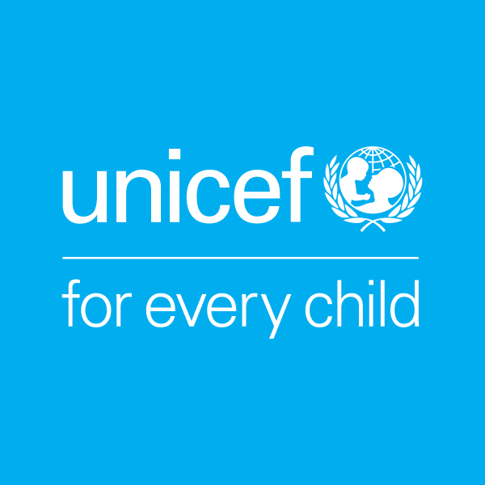

MT5000 Assignment 2
Unicef An Increase in VAS Supplement, An Increase in Life Expectancy?
UNICEF: VAS Programme

Key Facts
- Only 64 per cent of children in need are receiving the life-saving benefits of vitamin A supplementation. And more than 140 million children are being left behind.
- The coverage of VAS programmes dropped by more than half in countries with the highest under-five mortality rates in 2016 – the same countries where VAS is needed the most.
- The number of children left unprotected in high-mortality countries more than tripled between 2015 and 2016, jumping from 19 million to 62 million.
- The global community can change the course of VAS programmes and save lives by improving integration with other programs to reach every last child, strengthening monitoring to identify the unreached, and building knowledge on the most effective platforms to reach all children 6-59 months.
- For children living in countries where under-five mortality is high and vitamin A deficiency is a public health problem, vitamin A supplementation (VAS) provides vital protection from blindness and decreases their risk of dying from preventable causes such as measles and diarrhoea. During much of early childhood – from 6 months to 5 years of age – two high-dose supplements of vitamin A per year, spaced four to six months apart, can strengthen the immune systems and improve chances of survival
- Like all forms of malnutrition, vitamin A deficiency is a marker of inequality. In countries where diets are lacking in vitamin A and infections and deaths are common, supplementation programmes give vulnerable children a better chance to survive, develop and thrive.
Global coverage of vitamin A supplementation has dropped to a shocking six-year low, leaving more than one third of children unprotected from the devastating effects of vitamin A deficiency – and stark inequities remain in reaching the children most in need. As VAS delivery shifts and countries lose platforms that they have relied on to successfully deliver vitamin A in the past, the need to chart new directions for the future of VAS programmes has never been more urgent.
Countries
Unicef encounters many countries in the world that are considered to be among the poorest. The United Nations uses different metrics to measure poverty, including income levels, access to basic services, and health indicators. Some of the poorest countries in the world, based on their Gross Domestic Product (GDP) per capita, include:
- Burundi Central African Republic
- Democratic Republic of the Congo
- Niger
- Malawi
- Mozambique
- Liberia
- South Sudan
- Guinea-Bissau
- Afghanistan
They can be seen below on Map.
2001
2020
The graphs provided show the global coverage of vitamin A supplementation (VAS) in 2001 and 2020. The coverage of VAS programs has dropped significantly in countries with the highest under-five mortality rates, leaving millions of children unprotected. The graphs demonstrate the unequal distribution of coverage across the world, with some regions showing higher coverage than others. The 2020 graph shows a slight increase in coverage compared to the 2001 graph, but the overall coverage is still low and inadequate, leaving many children vulnerable to the negative effects of vitamin A deficiency.
UNICEF provides Vitamin A supplementation (VAS) to children in many of these countries. For example, in Afghanistan, UNICEF and the government provide bi-annual VAS to all children between 6 and 59 months of age. In the Central African Republic, UNICEF supports the Ministry of Health to implement VAS in the context of community-based management of acute malnutrition. In the Democratic Republic of the Congo, UNICEF provides VAS as part of its child survival and development program, which aims to improve child health and nutrition. However, the coverage of VAS programs in these countries is often lower than what is needed to reach all children, especially those in remote or conflict-affected areas. UNICEF continues to work with governments and partners to improve VAS coverage and to reach the most vulnerable children in the poorest countries.
Correlation
Its time to investigate if the countries receiving the supplements, result in children having a longer life expectancy.
The graph shows a scatter plot of life expectancy against the proportion of children receiving Vitamin A Supplementation (VAS) from UNICEF in different countries. The line of best fit, which is a linear regression model, indicates a positive correlation between these two variables. This suggests that as the proportion of children receiving VAS increases, so does the life expectancy in those countries. This correlation could be explained by the fact that VAS helps prevent blindness and decreases the risk of death from preventable causes such as measles and diarrhea, especially among children under five. This, in turn, could lead to a higher life expectancy in countries where VAS is widely available. However, it’s important to note that correlation does not necessarily imply causation, and other factors such as access to healthcare, sanitation, and education could also be influencing life expectancy in these countries. Nevertheless, this graph underscores the importance of increasing VAS coverage as a means of improving child health and survival.
Comparison
In order to get a detailed comparison between the countries, I randomly selected the following countries from 2007 in order to get a better analysis:
- Afghanistan
- Angola
- Bangladesh
- Benin
- Burkina Faso
- Burundi

Afghanistan, Angola, Bangladesh, Benin, Burkina Faso, and Burundi are six countries that have struggled with high rates of child mortality and vitamin A deficiency. The first graph shows the coverage of UNICEF’s Vitamin A Supplementation (VAS) programme in these countries in 2007. Bangladesh had the highest coverage at 89%, followed by Angola at 80%. Afghanistan, Burkina Faso, Benin, and Burundi all had coverage rates below 60%, indicating that a significant portion of their child populations were not receiving the life-saving benefits of vitamin A supplementation.
The second graph shows the life expectancy rates for these same six countries. Angola had the highest life expectancy at 52 years, while Afghanistan had the lowest at only 43 years.
The third graph shows the GDP for each of these countries, with Bangladesh having the highest GDP at $102 billion, and Burundi having the lowest at $2.5 billion. These graphs illustrate the challenges that these countries face in improving child health and survival, with low VAS coverage rates and poor health outcomes, despite differences in economic development. The UNICEF VAS programme can play a crucial role in improving child health in these countries, but concerted efforts are needed to ensure that every child has access to this life-saving intervention.
Conclusion
From the report, the conclusion that can be made is, the correlation between countries benefitting from UNICEF VAS programme and longer life expectancy is an encouraging indication of the positive impact that VAS can have on child health and survival. The fact that this correlation is not dependent on the GDP of a country highlights the potential for VAS to help bridge the gap in health outcomes between rich and poor countries. Despite the challenges of reaching the most vulnerable children in remote or conflict-affected areas, the UNICEF VAS programme has shown that it is possible to make a difference in the lives of millions of children around the world. Continued investment and support for VAS, along with efforts to improve monitoring and integration with other health programmes, can help ensure that all children, regardless of where they live, have access to the life-saving benefits of vitamin A supplementation.